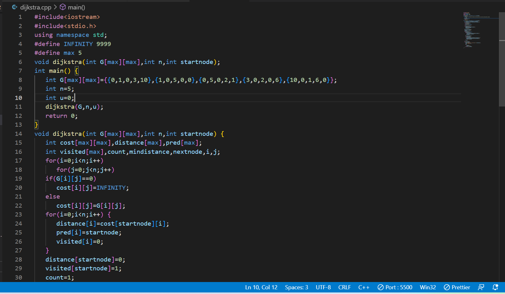

Dijkstra Algorithm
About The Algorithm::
Dijkstra algorithm is a single-source shortest path algorithm. Here, single-source means that only one source is given, and we have to find the shortest path from the source to all the nodes.

Djikstra's algorithm pseudocode
- We need to maintain the path distance of every vertex. We can store that in an array of size v, where v is the number of vertices.
- We also want to be able to get the shortest path, not only know the length of the shortest path.
- For this, we map each vertex to the vertex that last updated its path length.
- Once the algorithm is over, we can backtrack from the destination vertex to the source vertex to find the path.
- A minimum priority queue can be used to efficiently receive the vertex with least path distance.
Algorithm for dijikstra
- First define max=the size of the array that you want you graph to be then we have to define the infinty to 9999
- then we have to declare graph[max][max],cost[max][max],visited[max],parent[max],distance[max],mindistance,nextnode,count
- we first have to traverse through the graph 2d array by using to for loops if the the graph[i][j]=0 then we will put cost[i][j]=infinity
- else cost[i][j]=graph[i][j]
- then we will travese through the distance distance[i]=cost[startnode][i],parent[i]=startnode,visited[i]=0
- distance[startnode]=0,visited[startnode]=1
- count=1,mindistance=infinity,if its not visited and the mindistance is greater than the distance[i]the distance[i]=mindistance,nextnode=i
- then the next node would be visited the we will cheak wheather mindistance+cost[nextnode][i]is less than distance[i]if yes the we will assign distance to the mindistance plus cost[nextnode][i]
- then we will assign the parent as nextnode
- finally we will print the cost and distance
code for the dijikstra
